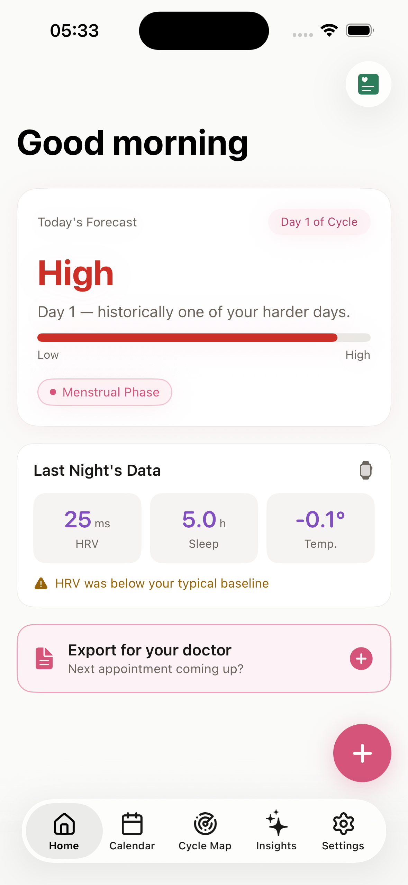
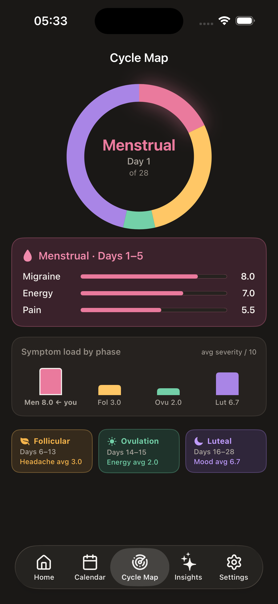
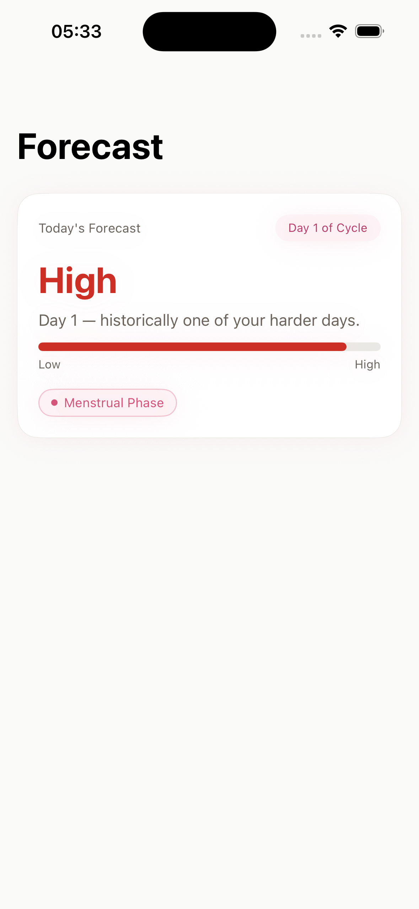
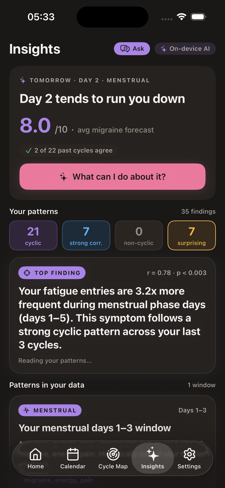
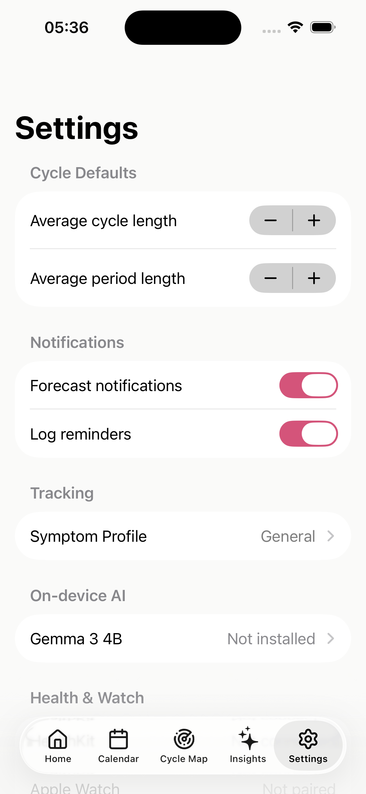

Five screens. One body.
A map that learns from you.
CycleSync is built around five primary surfaces. Each one is on-device, each one is built from your own data, and each one speaks in observed-pattern language — never in medical certainty. Below are the screens themselves, light and dark, in the colors of the cycle.
Where you are today.
The Home screen tells you where you are in your cycle right now and what your data has learned about days like today. Cycle Vitality summarises the four signals that matter most — phase, energy capacity, expected difficulty, and biometric trend.
Everything below the fold is contextual: what historically happens on this cycle day for you, not for a population average.
- PhaseLive, computed from cycle history
- Vitality4-axis snapshot of today
- Quick logSymptoms, energy, mood

Your cycle, not the average one.
The differentiating feature. A personalised visualisation of how each symptom you track distributes across your phases. Per-phase severity, peak cycle days, biometric overlays — built from your own logs.
After three cycles, the map gets sharp. After six, it's a tool that no generic period app can match, because no generic period app sees your body.
- EnginePearson r · Chi-squared
- Cyclicity testIs this symptom hormonal?
- Min data14 days · ideally 3 cycles

What today has historically been.
Replaces the old "risk score" idea. The Forecast tells you — in plain language — what cycle day you're on, what your historical pattern looks like for that day, and what symptoms are most likely to appear if any.
Phrasing is always observed-pattern. Never "you will have a migraine." Always "Day 23 has historically been one of your harder days."
- Difficultylow · elevated · high
- Top symptomsRanked by historical likelihood
- VoiceReflective, not predictive

Patterns you couldn't see by hand.
Insights are statistically validated correlations the engine surfaces only when they pass a significance test (p < 0.05). Examples: "Your nocturnal HRV drops noticeably on luteal days" or "Your migraines correlate strongly with day-22 of your cycle."
Nothing speculative. If the data isn't there, the engine stays quiet. Better silence than false signal.
- Thresholdp < 0.05, minimum 14 days
- Tone"Your data suggests…"
- Failure modeSilence beats noise

What you control. All of it.
Every permission, every export, every model. HealthKit access lives here (read-only, revocable from iOS Settings any time). The optional Gemma model download lives here too — opt-in, one-time, model weights only.
There is no account to sign into. There is no setting that turns telemetry "off" — there is no telemetry to begin with. The Settings screen is where you remove your data, not where you ask permission to be left alone.
- HealthKitRead-only, revocable
- Gemma modelOpt-in, ~4.1 GB, one-time
- ExportPDF on-device only
